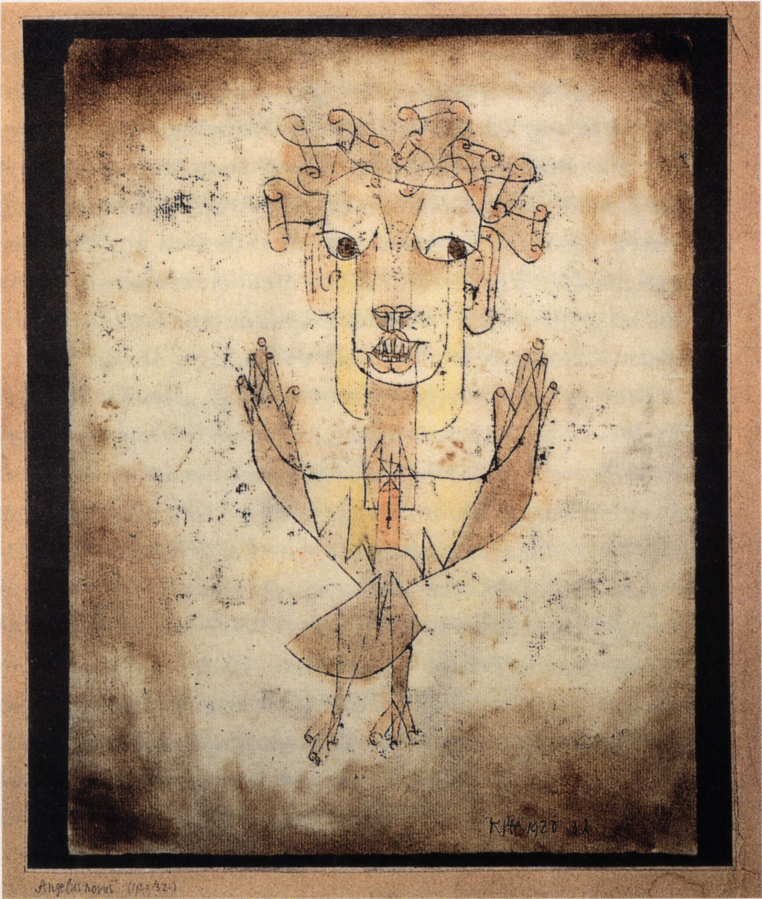

"A Klee painting named ‘Angelus Novus’ shows an angel looking as though he is about to move away from something he is fixedly contemplating. His eyes are staring, his mouth is open, his wings are spread. This is how one pictures the angel of history. His face is turned toward the past. Where we perceive a chain of events, he sees one single catastrophe which keeps piling wreckage and hurls it in front of his feet. The angel would like to stay, awaken the dead, and make whole what has been smashed. But a storm is blowing in from Paradise; it has got caught in his wings with such a violence that the angel can no longer close them. The storm irresistibly propels him into the future to which his back is turned, while the pile of debris before him grows skyward. This storm is what we call progress."
— Walter Benjamin, Theses on the Philosophy of History